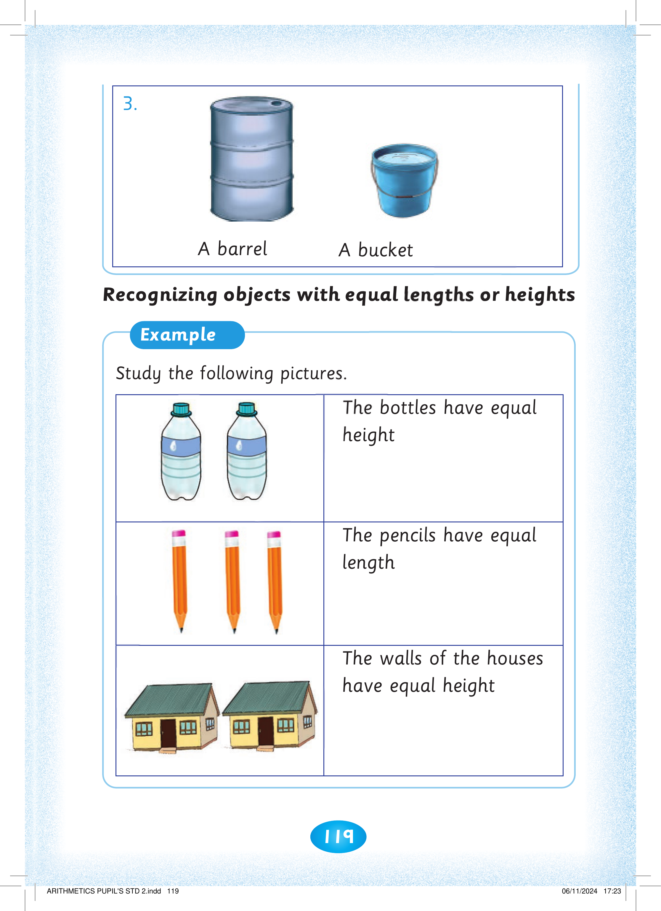
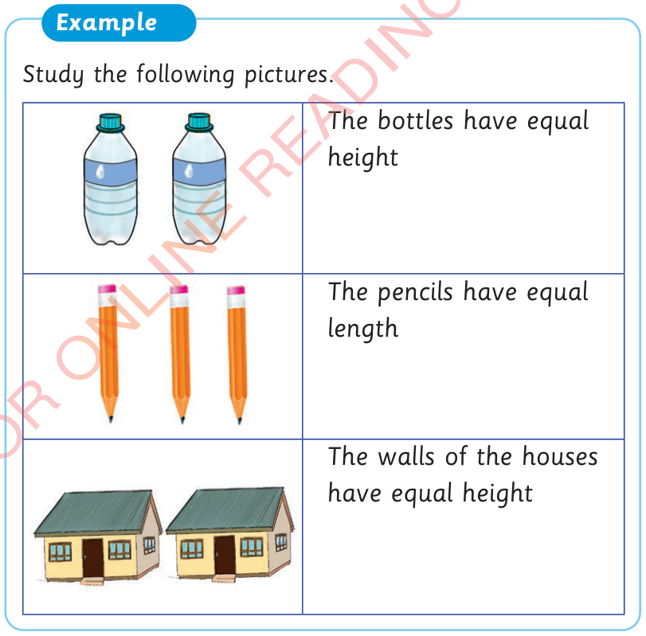
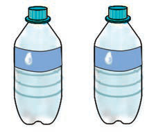
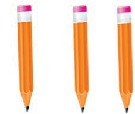
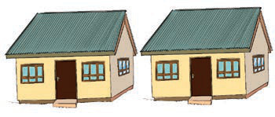
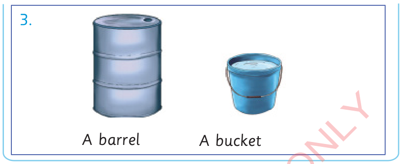

119



3. A barrel. A bucket. The picture shows a grey metal barrel on the left and a blue bucket with a handle on the right. Both objects rest on the same ground line. The top of the barrel reaches much higher than the top of the bucket. Recognizing objects with equal lengths or heights. Example. Study the following pictures. The bottles have equal height. The picture shows two matching bottles standing side by side. The pencils have equal length. The picture shows three matching pencils standing upright. The walls of the houses have equal height. The picture shows two matching houses standing side by side.
A barrel
A bucket
Recognizing objects with equal lengths or heights
Example
Study the following pictures.

The bottles have equal height

The pencils have equal length

The walls of the houses have equal height



ARITHMETICS PUPIL'S STD 2.indd 119
06/11/2024 17:23